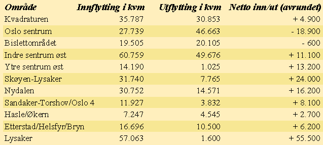

![[Forrige artikkel]](/me/ts/ne/gifs/prev.gif)
![[NE hjemmeside]](/me/ts/ne/gifs/ne-small.gif)
![[Neste artikkel]](/me/ts/ne/gifs/next.gif)
Av Egil Wettre-Johnsen
Plassmangel og uhensiktsmessige lokaler er det viktigste årsakene til at firmaer flytter på seg. I Oslo og Bærum flyttes det inn i 660.000 kvadratmeter nye lokaler hvert år. Største kontor-tilflyttingsområde er østre deler av Oslo sentrum inklusive Oslo City fulgt av Lysaker. Men, Lysaker har den desidert største nettotilveksten.
I dagens Oslomarked er det stort misforhold mellom etterspørsel og tilbud, konstaterer administrerende direktør Arne Thorvaldsen i Klosterborg AS overfor NæringsEiendom. Selskapet han har bygget opp spesialiserer seg på å kartlegge og analysere flyttemønstre, og på å formidle søkere etter lokaler til eiendomsbesittere og utleiere.
Gjennom daglig oppsøkende kartlegging av bedrifters flytteplaner, har Klosterborg opparbeidet seg mye datamateriale og kunnskap om næringslivets flytteplaner og flyttetilbøyeligheter. I Oslo og Bærum fanger de erfaringsmessig opp 80 prosent av alle de flyttinger som gjøres.
Til sammenligning vil det i år bli ferdigstilt 196.000 kvadratmeter næringsareal i Oslo og Bærum, mens prognosen for perioden 1996-99 tilsier årlig nybygging på 156.000 kvadratmeter. Grovt regnet betyr dette at det flyttes inn i fire-fem ganger mer areal enn det som nybygges. M.a.o. foregår det meste av flyttingen til eksisterende arealer og til eldre rehabiliterte arealer.
Mens søkermassen fordeler seg med rundt en tredjedel hver på kontor, lager/produksjon og kombinasjonsbygg, foregår 2/3 av den faktiske flyttingen til kontorbygg. I følge Thorvaldsen betyr dette at eiendomsbransjen i liten grad klarer å behovsoppfylle ønskene fra de som etterspør kombinasjonslokaler, mens konkurransen om kontorsøkere er hard og intens.
-Også her mht. mindre kontorer, har vi en ubalanse i markedet. Utleierne er svært opptatt av de store leietakerne. Samtidig viser vårt omfattende tallmateriale at den gjennomsnittlige kontorleiekontrakten er på 665 kvadratmeter. I sum viser disse forhold at eiendomsbransjen i liten grad klarer å tilfredsstille behovene til dem som søker etter små kontorlokaler, kombinasjonsbygg og lager/produksjon. Satt på spissen så blir hverken de små kontorbrukerne eller de med skitt under neglene gitt særlig prioritert, fremholder Thorvaldsen overfor NæringEiendom.
Kostnadene fordeler seg på følgende poster:
a) Tap av et halvt års leieinntekter: Kr. 325.000
b) Dekke felleskostnader, oppvarming etc.: Kr. 80.000
c) 1/5 av årsleien til markedsføring, provisjon etc.: Kr. 130.000
d) Oppussing, renovering, rehabilitering, leietakertilpassning: Kr. 425.000
e) Diverse uforutsette utgifter: Kr. 40.000
SUM: Kr. 1.000.000.
Beløpene vil særlig variere på post d. Kostnadene til rehabilitering og tilpasning varierer gjerne fra 300 kroner pr. kvadratmeter til 4.000 kroner pr. kvadratmeter for den type totalrehabiliteringer som f.eks. foregår i Wilhelmsen-bygget i Vika.
1) Leietakerne holder til i lokalene for å gjøre en jobb. Bygget og lokalene skal derfor være en behagelig og problemfri ramme rundt det leietakeren driver med.
2) Leietakeren føler fort om utleier er ute etter å hente mest mulig penger - eller om utleieren er ute etter å sørge for at leietakerens behov i størst mulig grad blir imøtekommet.
3) Utleier/gårdeier bruker lunsjmøte, allmannamøte eller lignende anledninger, til å orientere leietakernes ansatte om bygget og dets muligheter. Slikt skaper positive holdninger.
4) Overrasker med små forbedringer som blir lagt merke til. Slike tiltak har svært positive effekter på leietakerne.
5) Godt utvendig vedlikehold blir mer og mer viktig, og gir større respekt for bygget.
6) Bestemme seg for hvilke leietakere som vil beholdes, og tidsdifferensiere leiekontraktenes utløp.
7) Lar ikke alle leietakerne få opsjon på kontraktsfornyelse, og har is i maven når bygg fylles opp.
Når det gjelder begrepet uhensiktmessige lokaler går dette både på beliggenhet, manglende trygghet for de ansatte, dårlig adkomst, dårlig ventilasjon/kjøling, dårlig vedlikehold og slitasje, trafikkstøy og .
Et annet forhold som gir en indikasjon på hvor viktig det er å ivareta kommunikasjonen mellom utleier og leietaker, er at det stadig gjentar seg at utleiere først blir klar over egne leietakers flytteplaner gjennom meldesystemet til Klosterborg.
Kontorbrukerne søker seg til Oslo sentrum og vestover til og med Lysaker samt andre kjerneområder som Nydalen, Økern og Bryn/Etterstad etc, mens lager og produksjonslokaler har sitt kjerneområde fra området Hasle/Løren og oppover Groruddalen.
Spesielt å merke seg er at søkere etter mindre kontorlokaler er svært orienterte mot Oslo sentrum og de vestre regioner.
I 16-måneders perioden er det registrert innflytting til over 300.000 kvadratmeter med kontorer i Oslo og Lysaker. Interessant å merke seg er at litt over en tredjedel av arealet (113.000 kvadratmeter), er fylt opp av bedrifter og firmaer som har vært lokalisert utenfor Oslo og Lysaker. Resten av flyttingen har foregått internt i regionen.
Arne Thorvaldsen understreker overfor Nærings-
Eiendom at 16 måneder er et
såpass kort tidsintervall at man skal være forsiktige med å trekke for bastante
konklusjoner. Disse bør først trekkes når det foreligger tall over en 2-års
periode.
